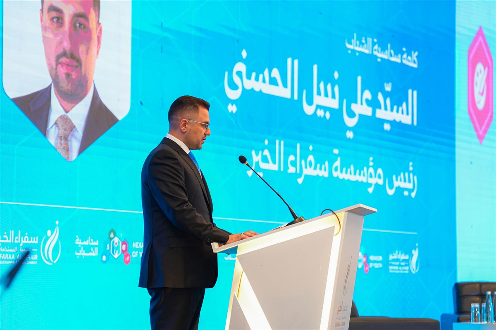
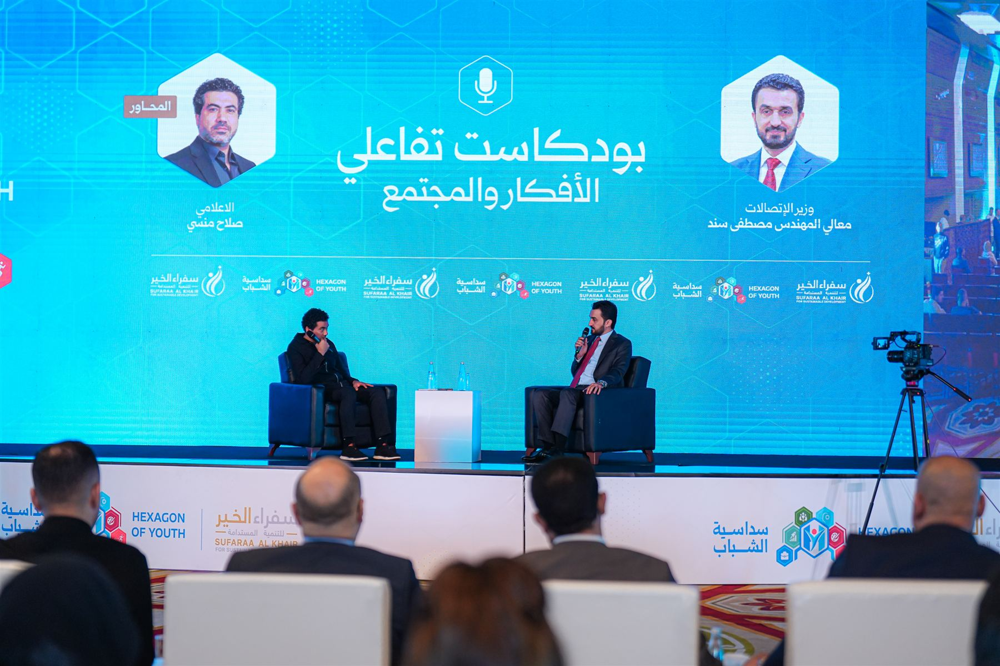
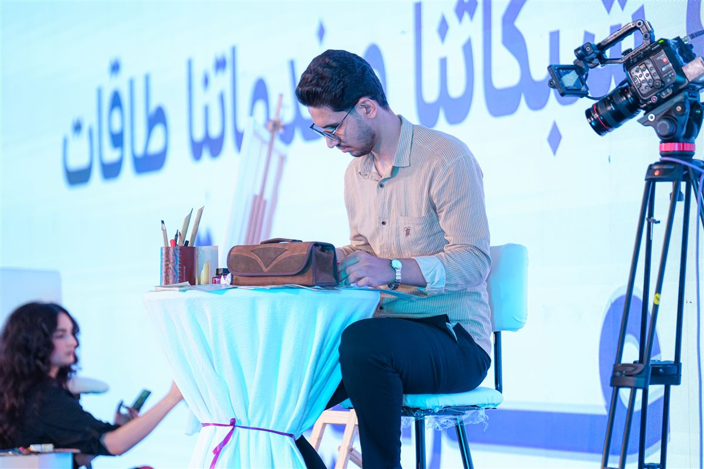
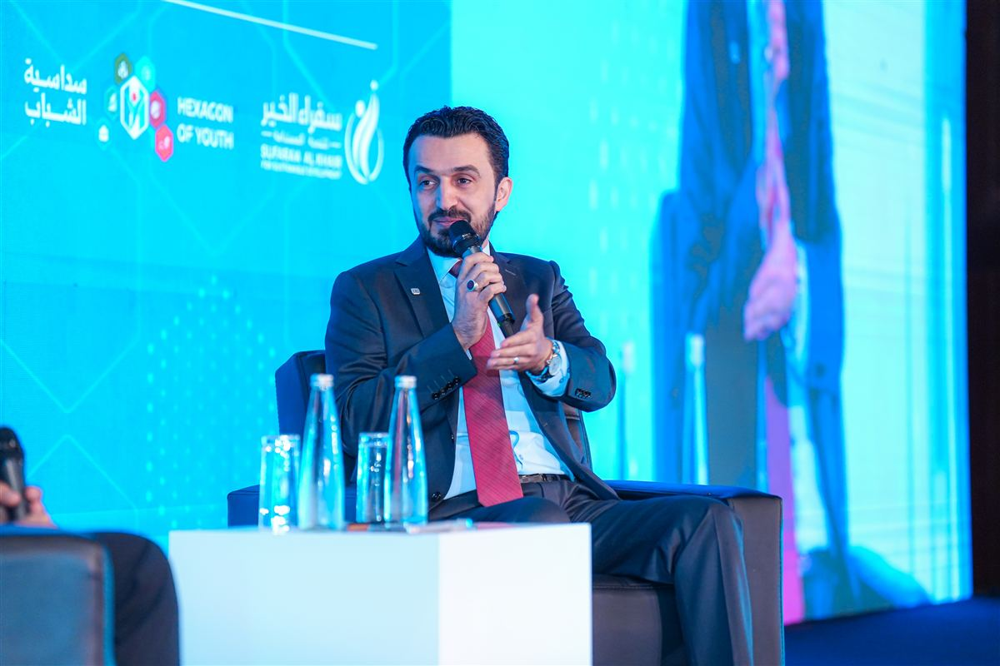
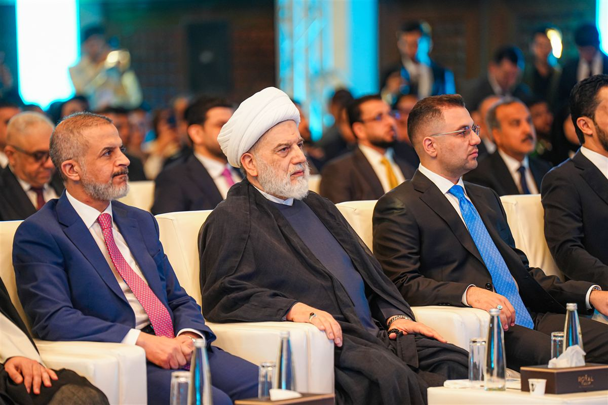
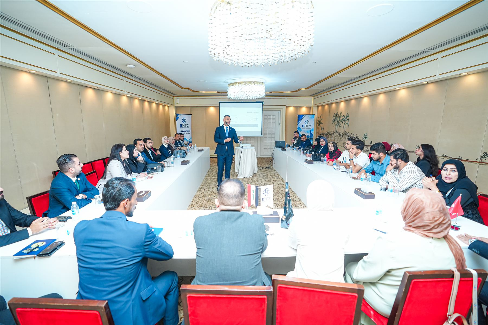
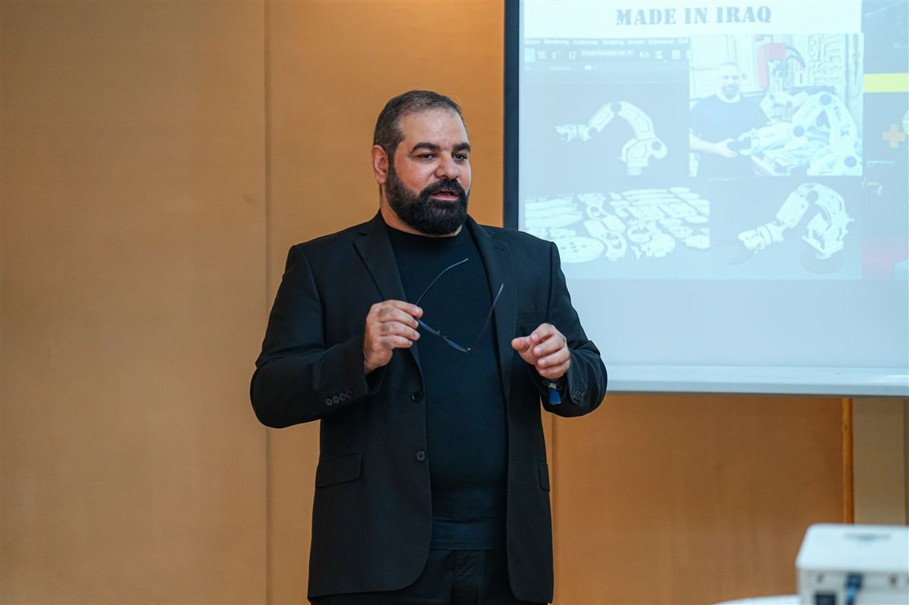
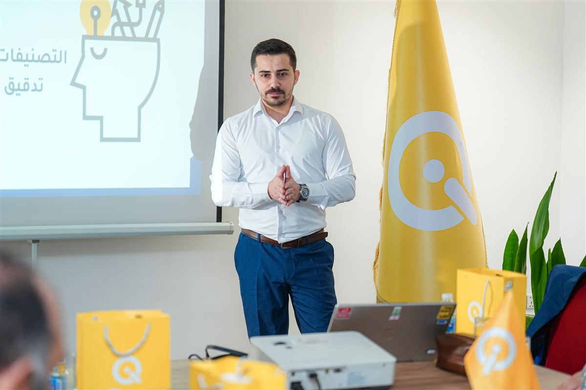

يومان على المسرح
افتتاح رسمي، جلسات حوارية، بودكاست تفاعلي، فن حيّ، واثنتا عشرة ورشة عمل مجانية.
من الافتتاح
الافتتاح والرعاية
انطلقت الفعالية يوم الجمعة ٦ تشرين الثاني الساعة ١١:٠٠ برعاية دولة رئيس مجلس الوزراء السيد علي فالح الزيدي، وافتتحها نائبه السيد محمد علي تميم بكلمة نيابةً عن دولته.

حفل الافتتاح
تقديم عريف الحفل، تلاوة آيات من القرآن الكريم، النشيد الوطني، وعرض فيديو عن سداسية الشباب.
كلمة نائب رئيس مجلس الوزراء
السيد محمد علي تميم، نيابةً عن دولة رئيس مجلس الوزراء، حتى ١١:٣٠.
شاهد الكلمةكلمة شباب السداسية
صعود الشباب الستة ممثلي الأضلاع إلى المسرح، وكلمة باسم شباب العراق ألقتها أديان.
جولة كبار الضيوف
في الجناح الرئيسي حتى ١٣:٠٠.

كلمة السيد علي نبيل الحسني، رئيس مؤسسة سفراء الخير
جيلٌ بطاقته وعلمه وحلمه،رسالة شباب السداسية من على المسرح
لا ينقصه إلا الباب الصحيح.
وهنا، في سداسية الشباب، بدأ الباب يُفتح.
المسرح الرئيسي
الضلع السادس، الأفكار والمجتمع، كان مكانه المسرح: استضاف على مدى يومين جلسات حوارية وبودكاستاً تفاعلياً مع وزراء ومسؤولين وخبراء، إلى جانب الفن الحيّ وكلمة الشباب.

إدارة العلاقات الخارجية ودورها في تفعيل الاستثمار والنهضة الاقتصادية للبلد
سماحة الشيخ الدكتور همام حمودي يحاوره الإعلامي صلاح منسي
شاهد الجلسة كاملة (٤٠ دقيقة)- حفل الافتتاح وكلمات رئيس المؤسسة ونائب رئيس مجلس الوزراء ووزير الاتصالات.
- كلمة شباب السداسية: ستة شباب يمثلون الأضلاع الستة.
- جلسات حوارية مع وزراء ومسؤولين وخبراء، بمشاركة معالي المهندس محمد صاحب الدراجي، وزير الاقتصاد الرقمي والحوكمة.
- جولة كبار الضيوف في الجناح الرئيسي.

- فقرة الفنون والمواهب، وفيها رسم حيّ على المسرح أمام الجمهور.
- شرح عن سداسية الشباب وأضلاعها الستة.
- بودكاست تفاعلي يقدّمه الإعلامي صلاح منسي بأربعة ضيوف، شارك فيه الحضور بأسئلتهم ومداخلاتهم.
- الكلمة الختامية لسداسية الشباب.
لحظات من المسرح

عزف حيّ ضمن فقرة الفنون والمواهب

رسم حيّ على المسرح

جلسة حوارية على المسرح الرئيسي

فنّان يرسم أمام الجمهور

من البودكاست التفاعلي

الصف الأول في الافتتاح
شاهد بالفيديو
الكلمات والجلسة الحوارية كاملة، ولقطات من اليومين، على صفحة مؤسسة سفراء الخير في فيسبوك.
٤٠:٠٧
جلسة حوارية · ٤٠ دقيقةسماحة الشيخ د. همام حمودي في حوار مع الإعلامي صلاح منسي حول دور العلاقات الخارجية في تنشيط الاستثمار والنهوض بالاقتصاد العراقي.
شاهد الجلسة كاملة٥:١٣كلمة دولة رئيس مجلس الوزراء
ألقاها نيابةً عنه معالي نائب رئيس مجلس الوزراء الأستاذ الدكتور محمد علي تميم في الافتتاح.
٦:٠٧كلمة سداسية الشباب
الأستاذ علي نبيل الحسني، رئيس مؤسسة سفراء الخير للتنمية المستدامة.
٥:١٠كلمة معالي وزير الاتصالات
السيد مصطفى سند، خلال حفل افتتاح سداسية الشباب ٢٠٢٦.
 ٢:٣٢
٢:٣٢لحظات من اليوم الأول
الأفكار والطاقات في يوم الافتتاح بفندق الرشيد، قاعة الزوراء.
١:٢٨لحظات من اليوم الثاني
أجواء وحضور مميز، وتفاصيل أكملت تجربة اليوم.
 ١:٠٩
١:٠٩ستة محاور، فكرة واحدة
ستة محاور تربط الموهبة بالمعرفة، والطموح بالفرصة، والفرد بمجتمعه.
اثنتا عشرة ورشة مجانية
أُقيمت على مدى اليومين (٦ في كل يوم) في القاعتين الجنوبية والشمالية، بسعة ٣٠ مقعداً لكل ورشة، وبالتسجيل المسبق عند ضلع التدريب والمهارات.
دور المسؤولية المجتمعية في الحد من مخاطر الأنشطة السلبية
تحليل إنشاء شركة ناشئة تكنولوجية في العراق
فن المبيعات
دور مواقع التواصل في صناعة الرأي العام
أتمتة المصارف
من الفكرة إلى المشروع التجاري
الحلقة المفقودة
دور الشباب والتكنولوجيا في تحقيق الأمن الغذائي
دور مواقع التواصل الاجتماعي في صناعة الرأي العام
التحقق من الأخبار الزائفة في زمن الإعلام الرقمي والذكاء الاصطناعي
قسم التوعية: نبذة عن الدفع الإلكتروني ومخاطر الاحتيال واستخدامات البطاقة
حماية هاتفك وحسابك في مواقع التواصل الاجتماعي


